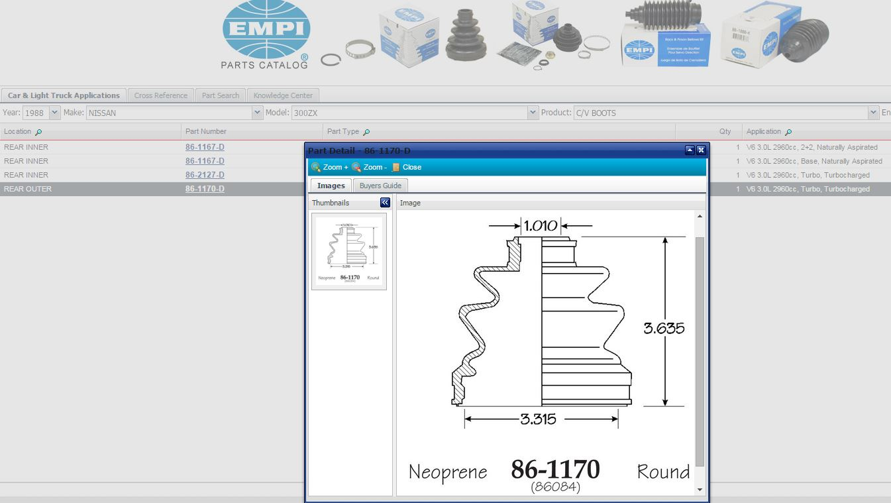

-
I'm having a hard time finding a boot that will fit over the inner CV joint for my SS halfshafts.
The inner bearing housing (90mm OD) has a raised 94mm OD lip. This differs from the outer bearing
housing which has a no raised lip, but a indented channel. Like this photo from hybridz:
The BeckArnley 103-2513 works great on the outside but when stretched over the inside, does not
stretch over that raised lip far in enough to get the clamp on.
Same thing with Dorman boots (614-001, 614-002).
Before i grab ankles and buy OEM, has anyone found a suitable replacement for the inner CV boot?
Thanks.
84 AE/Shiro #683/Shiro #820/84 Turbo -
Think i answered my own question with some research, but will post it here for posterity.
The OEM solution is a no-go as the part numbers for the boot kits show as unavailable,
sure there may be a few out there collecting dust.
EMPI makes CV boots and more importantly, has control drawings on their site.
http://www.showmetheparts.com/empi/
Rear Inner: PN 86-2127-D
Rear Outer: PN 86-1170-D

None of the local places carry them (Autozone,Oreilly,NAPA,Autovalue network)
But, JC Whitney (the granddaddy of DIY performance) carries them:
http://www.jcwhitney.com/empi-oe-rep…1663y1988g30j1
84 AE/Shiro #683/Shiro #820/84 Turbo -
Inner boot meaning diff side? If so Beck/arnley fits and looks exactly like OEM.Last edited by Augustus Maximus; 07-04-2017, 02:24 AM.Cha iro
enjoy building it yourself.
if it fails, fuck it.
at least you gave it a whirl. -
Yeah, diff side.
The BeckArnley that i got only work on the wheel side,
although they say inner and outer in the application.
I got the ones from JCWhitney coming next week.
No stress, just want to get them finished and off the bench so i can start the camber mod for the crossmember.
Shit that leaves my bench in an unfinished state has a tendency to stay in that state for an extended period.
84 AE/Shiro #683/Shiro #820/84 Turbo -
So the EMPI boots fit much better. Where as the BeckArnley had to be stretched and fit short, the EMPI was a perfect fit.
The BeckArnley are still nice and fit fine on the outside.
84 AE/Shiro #683/Shiro #820/84 Turbo -
Hold it, obviously the SS axle is stouter than the regular turbo axle. I'll snap a pic.Cha iro
enjoy building it yourself.
if it fails, fuck it.
at least you gave it a whirl. -
That's it on the diff outer sideLast edited by Z_Karma; 07-25-2022, 07:29 PM. Reason: restored deleted post for photo, edited diff side to "outer side"Cha iro
enjoy building it yourself.
if it fails, fuck it.
at least you gave it a whirl. -
12hrs on the job got me messed up. You're right, I have yet to do the inside. I guess I'll be needing a set of EMPI boots.Originally posted by Augustus MaximusCha iro
enjoy building it yourself.
if it fails, fuck it.
at least you gave it a whirl.

Copyright © 2006–. All rights reserved. Privacy Policy